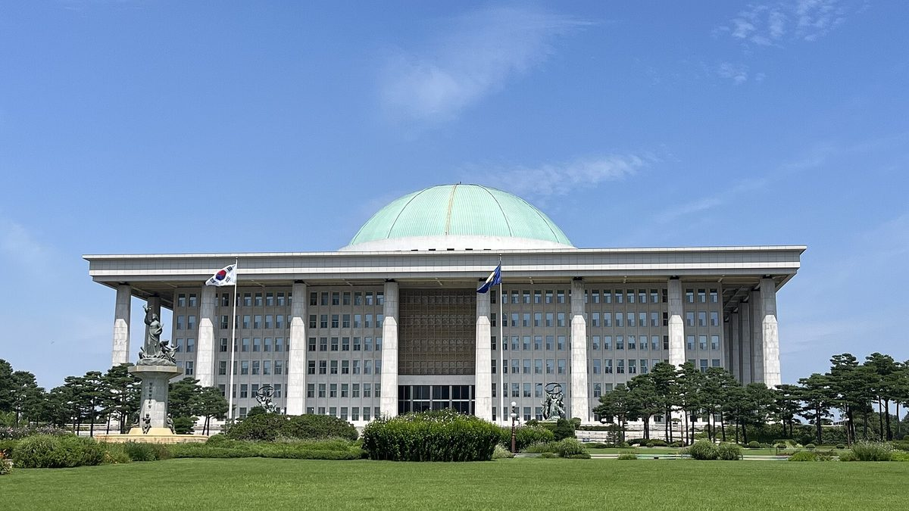

메가특구 법안 속 원전 전력 직접구매(PPA) 허용 조항 논란…기후부, 동의 곤란에서 신중 접근으로 표현 바뀌어

박해철 의원 자료 공개, 허용 여부는 아직 미정…월성 2호기 전력을 한 기업에 모두 공급하면 다른 수요자의 대체 전력 구입비가 약 3,800억 원 늘 수 있다는 의원실 추산
이른바 메가특구 법안에 특구 안 기업이 원자력발전소 전력을 직접 사들일 수 있게 하는 전력구매계약(PPA) 허용 조항이 들어가 논란이 일고 있다. 국회 기후에너지환경노동위원회 박해철 더불어민주당 의원이 25일 공개한 기후에너지환경부 자료를 보면, 기후부는 법안 제121조의 특구 내 직접 PPA 허용 조항을 두고 꼭 필요한 조항은 아니라면서도 신중하게 접근해야 한다는 입장을 냈다. 기후부가 지난 3월 원전 전력을 기업에 직접 공급하는 법안을 검토할 때 동의하기 어렵다고 밝혔던 것과 견주면 표현이 누그러졌다는 해석이 나오지만, 허용 여부는 아직 정해지지 않았다. 지금 기업의 직접 PPA는 재생에너지 위주로 운영되고 있으며, 특구라는 지역 기준을 적용하더라도 실제 혜택은 전기를 많이 쓰고 대형 계약을 맺을 여력이 있는 대기업에 몰릴 수 있다는 형평성 문제가 제기된다. 박 의원실은 월성 2호기가 한 해 생산하는 48억kWh를 한 기업에 모두 공급한다고 가정하면 다른 전력 수요자가 대신 사야 하는 전력의 구입비가 2025년 단가로 약 3,800억 원, 2026년 상반기 단가로 약 2,800억 원 늘어날 수 있다고 추산했다. 박 의원은 기업의 전력 수요는 기존 재생에너지 PPA와 지역별 요금제 등으로 풀어야 한다며 "가동 중인 원전과 신규 원전을 모두 PPA 대상에서 제외해야 한다"고 주장했다.
시민에너지 관점
기업 직접 PPA는 그동안 재생에너지 발전소가 기업 수요처와 직접 계약을 맺는 통로였고, 이 통로가 원전으로 넓어지면 마을과 시민이 세운 발전소가 같은 계약 시장에서 설 자리도 함께 좁아질 수 있다. 첨단산업을 끌어들이려면 크고 안정적인 전원이 필요하다는 주장도 있지만, 의원실 추산처럼 한 기업에 혜택이 몰리면 그 비용은 다른 전기 소비자에게 넘어갈 수 있다. 네덜란드 노르트브라반트주가 대형 재생에너지 사업에도 지역 소유 50%를 위한 노력을 입증하게 한 것처럼, 특구가 내세우는 지역 균형은 전기를 만드는 설비의 주인이 지역에 남을 때 실질이 된다. 국회는 법안 심사에서 원전 PPA 허용 여부를 따지는 데 그치지 말고, 특구 기업이 인근 주민·시민 소유 재생에너지 발전소의 전기를 먼저 살 수 있는 길부터 열어야 한다.
출처: 파이낸셜뉴스 2026-10-25 송지원 원문 보기
メガ特区法案の原発電力直接購入（PPA）容認条項が論議に…気候部の表現、同意困難から慎重な接近へ
パク・ヘチョル議員が資料を公開、容認するかどうかは未定…月城2号機の電力を1社にすべて供給すれば他の需要家の代替電力購入費が約3,800億ウォン増えうるとの議員室試算
いわゆるメガ特区法案に、特区内の企業が原子力発電所の電力を直接購入できるようにする電力購入契約（PPA）の容認条項が盛り込まれ、論議を呼んでいる。国会気候エネルギー環境労働委員会に所属する共に民主党のパク・ヘチョル議員が25日に公開した気候エネルギー環境部の資料によると、気候部は法案第121条の特区内直接PPA容認条項について、必須の条項ではないとしながらも慎重に接近する必要があるとの立場を示した。気候部は今年3月、原発電力を企業に直接供給する法案を検討した際には同意しがたいとしており、それと比べて表現が和らいだとの解釈も出ているが、容認するかどうかはまだ決まっていない。現在、企業の直接PPAは再生可能エネルギーを中心に運用されており、特区という地域の基準を当てはめても、実際の恩恵は電力を多く使い大型契約を結ぶ余力のある大企業に集中しかねないという公平性の問題が指摘されている。パク議員室は、月城2号機が年間に生産する48億kWhを1社にすべて供給すると仮定した場合、他の電力需要家が代わりに購入する電力の費用が2025年の単価で約3,800億ウォン、2026年上半期の単価で約2,800億ウォン増える可能性があると試算した。パク議員は、企業の電力需要は既存の再エネPPAや地域別料金制などで賄うべきだとして、「稼働中の原発と新規原発をいずれもPPAの対象から除外すべきだ」と主張した。
市民エネルギーの視点
企業の直接PPAはこれまで、再生可能エネルギー発電所が需要家企業と直接契約を結ぶ通り道であり、この道が原発にまで広がれば、村や市民が建てた発電所が同じ契約市場で占める余地も狭まりかねない。先端産業を誘致するには大きく安定した電源が必要だという主張もあるが、議員室の試算のように恩恵が1社に集中すれば、その費用は他の電力消費者に回る可能性がある。オランダの北ブラバント州が大規模な再エネ事業にも地域所有50％に向けた努力の証明を求めているように、特区が掲げる地域均衡は、電気をつくる設備の持ち主が地域に残ってこそ実質を持つ。国会は法案審査で原発PPAの容認の是非を問うだけでなく、特区の企業が近隣の住民・市民所有の再エネ発電所の電気を優先して買える道をまず開くべきだ。
出典: ファイナンシャルニュース（Financial News） 2026-10-25 ソン・ジウォン 原文を読む
韩国超大特区法案中允许直接购买核电(PPA)条款引发争议…气候部表态由难以同意转为需审慎对待
Park Hae-cheol议员公开相关资料，是否允许尚未确定…议员办公室估算，若月城2号机电力全部供给一家企业，其他用户的替代购电费用可能增加约3,800亿韩元
韩国所谓的超大特区（mega zone）法案中写入了允许特区内企业直接购买核电站电力的电力购买协议（PPA）条款，引发争议。国会气候能源环境劳动委员会所属共同民主党议员Park Hae-cheol于25日公开的气候能源环境部资料显示，对于法案第121条关于特区内直接PPA的条款，气候部表示该条款并非必不可少，但需要审慎对待。气候部今年3月审查向企业直接供应核电的法案时曾表示难以同意，与之相比措辞有所缓和，外界因此出现各种解读，但是否允许尚未确定。目前企业直接PPA以可再生能源为主运行，有意见指出，即便以特区这一地域标准适用，实际好处也可能集中到用电量大、有能力签订大额合同的大企业，存在公平性问题。Park议员办公室估算，假设把月城2号机一年发电的48亿千瓦时全部供给一家企业，其他电力用户替代采购电力的费用按2025年单价计算可能增加约3,800亿韩元，按2026年上半年单价计算约增加2,800亿韩元。Park议员主张，企业的用电需求应通过现有的可再生能源PPA和分地区电价等方式解决，"应将运行中的核电站和新建核电站全部排除在PPA对象之外"。
市民能源视角
企业直接PPA一直是可再生能源电站与企业用户直接签约的通道，如果这条通道扩大到核电，由村庄和市民建设的电站在同一合同市场中的空间也可能随之缩小。有人主张吸引尖端产业需要规模大而稳定的电源，但正如议员办公室的估算所示，好处一旦集中到一家企业，成本就可能转嫁给其他电力消费者。荷兰北布拉班特省要求大型可再生能源项目也要证明为实现50%本地所有作出努力；同样，特区所标榜的地区均衡，只有当发电设施的主人留在本地时才有实际意义。国会在审议法案时不应只讨论是否允许核电PPA，而应首先为特区企业优先购买附近居民和市民所有的可再生能源电站电力开辟道路。
来源: Financial News 2026-10-25 Song Ji-won 查看原文
Clause allowing direct nuclear power purchases (PPAs) in Korea's mega special zone bill draws controversy as climate ministry softens wording from hard to agree to careful approach
Rep. Park Hae-cheol releases ministry documents; no decision yet on whether to allow it. His office estimates that supplying all of Wolsong Unit 2's output to one company could raise other users' replacement power costs by about 380 billion won
A clause in Korea's so-called mega special zone bill that would let companies inside the zones buy electricity directly from nuclear power plants through power purchase agreements (PPAs) has become a point of controversy. According to Ministry of Climate, Energy and Environment documents released on the 25th by Rep. Park Hae-cheol of the Democratic Party, a member of the National Assembly's Climate, Energy, Environment and Labor Committee, the ministry said the bill's Article 121 allowing direct PPAs within the zones is not essential but calls for a careful approach. In March, when reviewing a bill on supplying nuclear power directly to companies, the ministry had said it found it hard to agree, so some read the new wording as a softer stance, but no decision has been made on whether to allow it. Direct corporate PPAs currently operate mainly with renewable energy, and critics raise a fairness problem: even with a regional criterion such as a special zone, the real benefit could flow to large companies that use the most power and can afford big contracts. Park's office estimated that if the 4.8 billion kWh Wolsong Unit 2 generates in a year were supplied entirely to one company, the cost of the replacement power other users would have to buy could rise by about 380 billion won at 2025 prices and about 280 billion won at first-half 2026 prices. Park said companies' power needs should be met through existing renewable PPAs and regional pricing, arguing that "both operating and new nuclear plants should be excluded from PPAs."
Citizen Energy View
Direct corporate PPAs have been the channel through which renewable power plants sign contracts directly with corporate buyers, and if that channel is widened to nuclear power, the room for plants built by villages and citizens in the same contract market could shrink as well. Some argue that attracting advanced industries requires large, stable power sources, but as the lawmaker's estimate shows, if the benefit is concentrated in one company the cost can be passed on to other electricity consumers. Just as the Dutch province of North Brabant requires even large renewable projects to show efforts toward 50% local ownership, the regional balance that special zones promise becomes real only when the owners of the generating facilities remain in the region. In reviewing the bill, the National Assembly should go beyond debating whether to allow nuclear PPAs and first open a way for zone companies to buy power from nearby renewable plants owned by residents and citizens.
Source: Financial News 2026-10-25 Song Ji-won Read the original